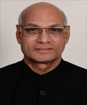
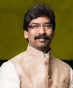
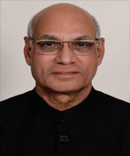
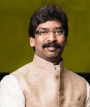

WHEN WAS JHARKHAND FORMED
Jharkhand which came into being on 15 November 2000 as the 28th State of the Union is the homeland of the
tribals who had dreamed of a separate state for a long time.
The formation of Jharkhand, constituting the 18 districts of southern Bihar, is the fulfillment of a
fifty-year struggle for creation of a heavily tribal state. The boundaries of the new state are less
extensive than the originally-conceived Jharkhand, embracing tribal hill areas of Madhya Pradesh, Orissa,
and West Bengal, in addition to southern Bihar. The new state takes 35 percent of the population of
Bihar--India's second most populous state--but, with its coal mines and steel mills, 65 percent of the
state's revenue.
ABOUT THE JHARKHAND
Jharkhand ("The land of forest") is a state in eastern India, created on 15 November
2000, from what was
previously the southern half of Bihar.The state shares its border with the states of Bihar to the north,
Uttar Pradesh to the northwest, Chhattisgarh to the west, Odisha to the south and West Bengal to the east.
It has an area of 79,714 km² (30,778 sq mi). It is the 15th largest state by area, and the 14th largest by
population. Hindi is the official language of the state.The city of Ranchi is its capital and Dumka its sub
capital. The state is known for its waterfalls, hills and holy places: Baidyanath Dham, Parasnath and
Rajrappa are major religious sites.
 




ABOUT
GOVERNER:
CHEIFMINISTER:
CHEIFSECERETARY:
State : JHARKHAND
Area : 79,714 km²
Capital City : Ranchi
District : 24
Population : 3.3 Crores
Ramesh Bais (born 2 August 1947)
is an Indian politician from Raipur,
Chhattisgarh. He is serving as
the 10th and current
Governor of Jharkhand.
Hemant Soren (born 10 August 1975)
is an Indian politician from
Jharkhand,who has taken oath
as a Chief Minister of
Jharkhandon 29 December 2019.
Sukhdev Singh a 1987-batch
IAS officer has been
appointed as the
chief secretary of Jharkhand.
ARTICLE :
Jharkhand (/ˈdʒɑːrkənd/;[7] Hindi: [d͡ʒʱɑːɾkʰəɳɖ]; lit. 'the land of forests') is a state in eastern
India.[8] The state shares its border with the states of West Bengal to the east, Chhattisgarh to the west,
Uttar Pradesh to the northwest, Bihar to the north and Odisha to the south. It has an area of 79,716 km2
(30,779 sq mi). It is the 15th largest state by area, and the 14th largest by population. Hindi is the
official language of the state.[3] The city of Ranchi is its capital and Dumka its sub-capital. The state is
known for its waterfalls, hills and holy places; Baidyanath Dham, Parasnath, Dewri and Rajrappa are major
religious sites.[9][10] The state was formed on 15 November 2000, after carving out what was previously the
southern half of Bihar.
Jharkhand suffers from what is sometimes termed a resource curse:[11] it accounts for more than 40% of the
mineral resources of India,[12] but 39.1% of its population is below the poverty line and 19.6% of children
under five years of age are malnourished.[13] Jharkhand is primarily rural, with about 24% of its population
living in cities.[14] It is amongst the leading states in terms of economic growth. In 2017–18, the GDP
growth rate of state was at 10.22%.
GEOGRAPHY :
Jharkhand is located in the eastern part of India and is enclosed by West Bengal to the eastern side,
Chhattisgarh and Uttar Pradesh to the western side, Bihar to the northern part and Odisha to the southern
part.
Jharkhand envelops a geographical area of 7,970,000 hectare. Much of Jharkhand lies on the Chota Nagpur
Plateau. Many rivers pass through the Chota Nagpur plateau. They are: Damodar, North Koel, Barakar, South
Koel, Sankh and Subarnarekha rivers. The higher watersheds of these rivers stretch out within the Jharkhand
state. Much of the Jharkhand state is still enclosed by forest. Forests sustain the population of elephants
and tigers.
MAIN RIVER
- Ganga River: The holy river Ganga passes through the north-eastern district of Sahebganj. Cities on the
banks of Ganga river in Jharkhand: Sahebganj, Pakur
- Son River: Origin of Son River: Amarkantak, Cities on the Shore of Son River: Sidhi
- Subarnarekha River: Origin of Subarnarekha River: (Nagdi Ranchi) Chota Nagpur Plateau, Cities on the
Shore of Subarnarekha River: Ranchi, Chandil, Jamshedpur, Ghatshila, Gopiballavpur
- Damodar River: Origin of Damodar River: Chota Nagpur Plateau (Tori latehar), Cities on the Shore of
Damodar River: latehar, lohardaga, Ramgarh, Gridih, Dhanbad, Bokaro, Asansol, Raniganj, Durgapur,
Bardhaman
- Kharkai River: Origin of Kharkai River: Mayurbhanj District, Odisha; Cities on the Shore of Kharkai
River: Rairangpur, Adityapur, and enters the Subarnarekha river in north-western Jamshedpur.
- Lilajan River: Also known as Falgu river. Origin of Lilajan River: Northern Chota Nagpur Plateau, City
on the Shore: Gaya